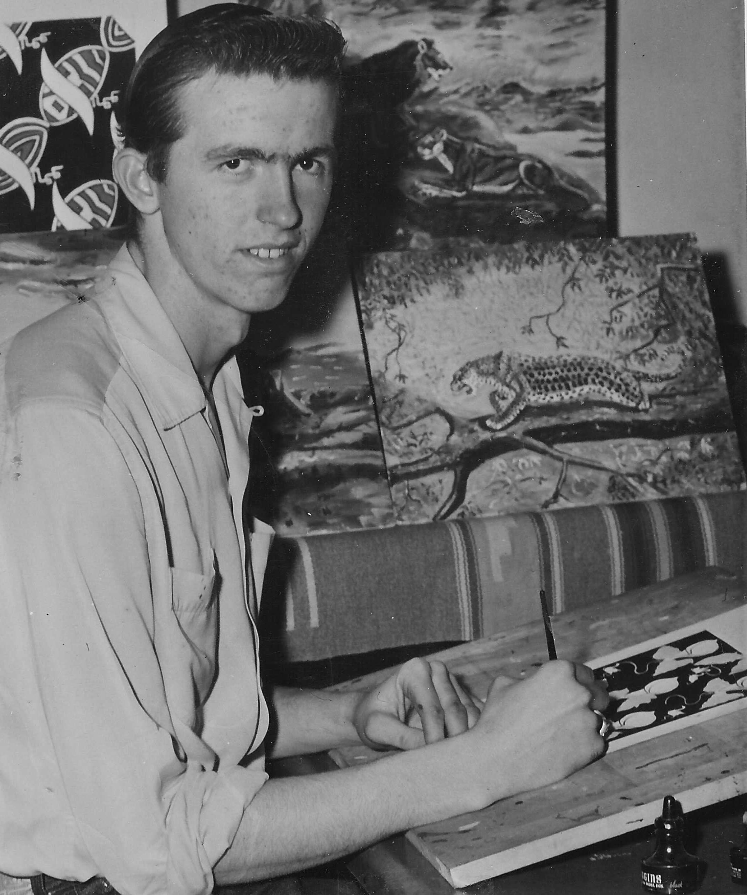
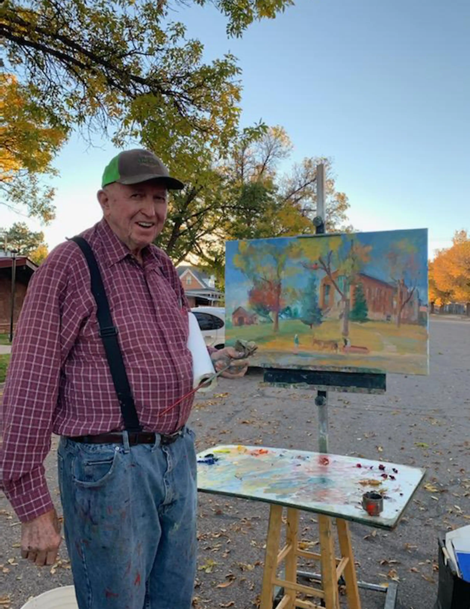

Gary Guymon's Journey in Art
Early Life
Gary started his journey by lettering signs as a teenager. This early work sparked a passion that led him to pursue painting.
Middle Career

During his prime years, Gary transitioned to oil painting, capturing the breathtaking landscapes of the Southwest.
Later Years
Now in his 80s, Gary continues to paint, creating works that celebrate nature and his artistic legacy.